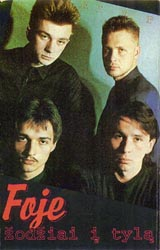

 |
žodžiai į tylą |
Žodžiai ir muzika Andriaus Mamontovo
Įrašyta 1989 m. Varšuvoje, studijoje CCS Intermedia.
Garso režisierius - Leszek Kaminski.
Korekcijų garso režisierius - Eugenijus Motiejūnas.
MC (c)(p) 1995 Bomba Records
- Žodžiai į tylą
- Krantas
- Kita diena
- Mes visi
- Žodžiai į tylą 88
- Aš čia esu
- Geltoni krantai
- Paskutinė žiema
- Tu krenti
- Tamsoje
- Paskutinė žiema 88
2,5,11 - tik MC
- Andrius Mamontovas - gitara, klavišiniai, vokalas
- Saulius Valikonis - saksofonas (1-4, 6-10)
- Robertas Griškevičius - klavišiniai (1-4, 6-10)
- Eugenijus Pugačiukas - būgnai, programavimas (1-4, 6-10)
- Arnoldas Lukošius - klavišiniai (5, 11)
- Robertas Meržvinskas - saksofonas (5, 11)
- Gediminas Simniškis - bosinė gitara (5, 11)
- Jaunius Beinortas - gitara (5, 11)
ŽODŽIAI Į TYLĄ
tolstanti saule pro šakas
tolstantis aš nuo jos lange
vakaro kalbos erdvėje
gesta aplenkdamos mane
nors žiebias tūkstančiai langų
ir girdis žingsniai prie namų
aš žodį ištarsiu jis nuskęs tyloj
galbut tik jinai mane išgirs
kiek tūkstančių žodžių aš ištariau jai
kiek jų dar reikės į ją ištart
saulės apakinta diena
triukšmo ir nerimo pilna
rūpesčių tvaikas virš galvų
aš kaip ir tu čia gyvenu
nors gatvėj tūkstančiai veidų
ir širdys plyšta nuo dainų
žiuriu į atviras akis
ar jos ką naujo pasakys
žvilgsnis iš veidrodžio gelmės
tai ką ištarsiu ar girdės
nors tik save tesuprantu
nors neradau kitų akių
KRANTAS
Pučia pučia jūrų vėjas,
Neša neša mano laivą,
Mano viltį neša neša...
Supa supa juodos bangos,
Glosto mažą mano laivą,
Blaško blaško mano sapną.
Kur pasisuksi, naktis
Apgaubia tavo akis,
Apgaubia tavo viltis širdy.
Tu jos klasta netikėk,
Tikslą, kaip žvaigždę, turėk.
Baigsis audra, ir nušvis tavo veidas.
Lekia lekia mano laivas,
Skuba skuba ten, kur krantas,
Ten, kur baigias juodos bangos.
Skuba skuba ten, kur smėlis,
Ten, kur žmonės, ten, kur gėlės,
Ten, kur saulė žemę šildo.
Galbūt nėra mano kranto,
Tiktai vėjas, juodos bangos.
Galbūt krantas - mano sapnas...
Kas tik būtų - atiduosiu
Visą jėgą savo laivui
Ir pasieksiu savo krantą!
Pučia pučia jūrų vėjas,
Neša neša mano laivą...
KITA DIENA
kita diena ateis kaip tūkstančiai kitų
kita diena ar kas pasikeis
kita diena ar vėl bus toks rūškanas dangus
kita diena ar ji bus giedra
kita diena galbūt ji jau aušta manyje
kita diena galbūt ji šalia
kita diena jau suplaka tūkstančiai sparnų
kita diena ar ji bus kita
aš nusijuoksiu tamsoje laimei
kuri mane aplenks
aš nusijuoksiu tamsoje sėkmei
kuri lydės mane
aš nusilenksiu tamsoje šviesai
kurią atneš diena
aš nusilenksiu tamsoje
tegu tik ateis
kita diena ar liks tas chaosas joje
kita diena ar kas išsispręs
kita diena sustingusios versmės ar pratrūks
kita diena o gal tai šiandien
aš nusilenksiu tamsoje vilčiai
kuri mane apgaus
aš nusilenksiu tamsoje mirčiai
kuri suras mane
aš nusilenksiu tamsoje meilei
kuri mane paliks
nebegaliu būt tamsoje
geriau jei ateis
kita diena
MES VISI
visi mes galvojam kad žinome tiesą
kiekvienas galvoja kad klysta kiti
kiekvienas save paliekame vieną
kiekvienas vis bandom kažkuo išsiskirt
neprisipažinsim kad virtom į masę
į visumą pilką iš tų kas keisti
ar mes iš metalo ar mes iš plastmasės
visi mes tik žaidžiam kad esam tikri
mes džiaugtis nemokam
nes viską jau matėm
mes norim gyventi naujau ir naujau
mes vienas kitam pavirtome daiktu
ir turim viens kita kaskart vis trumpiau
kažkas paglostys tavo plaukus
kažkas pažiurės į tavo akis
kažkas apsidžiaugs dienos sulaukę
kažkam ryte nesibaigs naktis
AŠ ČIA ESU
aš nematomas jūros vėjas
aš mėnulio ryški šviesa
aš ervė ir bekraštis laikas
aš tik taškas tuštumoje
aš aukščiausiai pakilęs paukštis
aš žemiausia žmogaus aistra
aš jau miręs nors dar negimęs
aš esu ir manes nėra
aš čia esu ir mūsų čia daug
ir jūs kaip aš
ar bus kitaip jei dingsiu iš čia
ar bus kitaip
tu mane sutinki kas dieną
tu manes niekada nematai
tu nenori pakeisti nieko
tu svajoji gyvent kitaip
tu klausai ką visi tau sako
tu nebetiki jais visais
tu visai nebemyli nieko
tu taip lauki gal kas ateis
mes kartu ir visi po viena
mes taip vieniši minioje
ir aplinkui visi mums priešai
mes ir patys jiems priešai čia
mes nematom negirdim nieko
mes tik trokštame likt gyvi
mes dar galim kažka ištarti
bet tie žodžiai mums bus tušti
GELTONI KRANTAI
galbūt šiandiena aš netoks
koks būt galėčiau jei supraščiau
žemiškus dėsnius ir tiesas
jei numatyčiau tai kas bus
jeigu atspėčiau kad lietus
nakčiai atėjus bels į langą
jeigu atspėčiau kad diena
bus apsiniaukus ir drėgna
geltoni krantai jūros begalybėj
žaidžiantys vaikai smėlio pilyse
mano pėdos ten dar neišsitrynė
kaip sugrįžt atgal kaip atgaut save
durys užvertos ir tyloj
lūpos šnabždės kažką nebyliai
šauksmas begarsis nuskambės
aš nežinau kas bus vėliau
viskas praėjo kas ateis
jeigu jau nieko nebeliko
jei paskutiniai traukiniai
pasieke tolimas stotis
ieškojau džiaugsmo tik jame
paskendo viltys paskutines
aš troškau degti ugnyje
bet dūmai nuodijo akis
nesitikėjau kad diena
pavirs į juodą tamsią naktį
aš taip ilgai žudžiau save
ir negalvojau kad pavyks
PASKUTINĖ ŽIEMA
ir vėl ateis ta klaiki žiema
ir aš numirsiu su medžiais kartu
nusišypsojęs sustingsiu lede
ir mano šypseną vėjas užpūs
kaip uždegt save
kai aplink žiema
kai aplink veidai
iškirsti lede
tai bus be galo šalta žiema
bet aš nejausiu jos pirštų aštrių
aš nematysiu kaip ges šviesa
aš nežinosiu kad jos neturiu
galbūt tai bus paskutinė žiema
galbūt daugiau niekada neatšils
ir ta ledinė klaiki šypsena
išliks ir jau niekada neištirps
TU KRENTI
nei blizgantys daiktai
nei pikti balsai
nei geismų griūtis
neprivers užmerkt
link tiesos akių
ir nebebus žingsnių atgal
aš numečiau visas
šypsenų pinkles
mimikas veidų
nebereikia jų
aš tavim tikiu
ir niekada to nebeslėpsiu
taip aš tave matau
aš tave jaučiu
aš gerai žinau
posūkius minčių
juk tu dar tenai
kur link nebebus žingsnių atgal
kam kam save žudai
liūdesio kava
pokalbių tyla
muzikoj klaikioj
tu randi save
tavo džiaugsmai tavo nelaimė
jau greit taves neliks
dūmų migloje
saujoj pelenų
ampulėj tuščioj
vyno svaigume
dingsiu ir aš liūdesio jūroj
TAMSOJE
aš per tamsą einu ryto link
begalybė pasaulių aplink
aš jų nematau bet jaučiu kad jie čia
neregimos rankos jos paliečia mane
tamsiame labirinte aš užrišu akis
nes vistik čia nerasiu ugnies
tik aš žinau kad kažkas yra šalia
ir tas kažkas link šviesos mane palydės
tolimi kaimai loja šunų balsais
kodėl šunys nemiega nakčia
nė vieno žmogaus aplinkui tušti laukai
galbūt jie jaučia tai ką ir aš jaučiu
atsiliepkite tie kurie lydit mane
galbūt jūsų jau žemėj nėra
jūs leiskite man patikėt tuo kad esate čia
ir tuo kad mirtis apgyvendins mane erdvėje